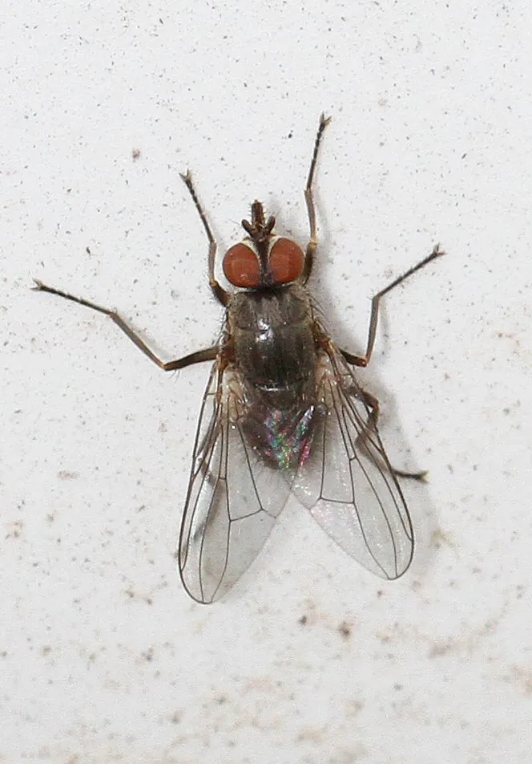

昆虫 · 动物界
角蝇 Haematobia irritans

体长仅四毫米的小型吸血蝇，终生几乎不离牛体，成群停在牛角和背部吸血，是养牛业的重要害虫。
- 分类
- 门节肢动物门纲昆虫纲目双翅目科蝇科属角蝇属
- 栖息环境
- 牛体表、牧场草地与新鲜牛粪
- 地理分布
- 原产欧洲，现遍布世界养牛区，中国南北牧场均有
- 保护级别
- 常见畜牧害虫，无保护需求
物种志
角蝇的成虫体长约四毫米，体灰黑色，胸背有暗色纵纹，口器细长适于刺吸。它比家蝇小得多，翅膀宽大，停歇时两翅平叠在背上，常成群聚集在牛角基部、背脊和腹下。雌蝇在牛的新鲜粪便上产卵，幼虫在粪块中发育，蛹也化在粪内，成虫羽化后立刻飞上牛体，几乎终生在宿主身上生活。
它原产欧洲，随牛只传播到美洲、澳洲和亚洲，中国北方和南方牧场都有分布。成虫昼夜叮咬牛体，一天可吸血二三十次，牛只因持续骚扰而采食减少、增重变慢、产奶下降，长期寄生还会造成皮肤损伤和贫血。由于整个生活史都围绕牛和牛粪，防治要靠牛体喷药、耳标杀虫剂和粪便处理，只处理牛体往往压不住种群。
形态与习性
- 体长约四毫米，比家蝇小
- 口器细长，适于刺吸血液
- 习性几乎终生在牛体，群集于角基与背脊
- 孳生幼虫在新鲜牛粪中发育
- 吸血量一天可叮咬吸血二三十次
- 防治牛体喷药、耳标、粪便处理
趣味知识
- 它一辈子几乎不离开牛身，连产卵时也只是飞到刚落下的牛粪上，完事再飞回去。
- 一天被叮二三十次，牛吃不好也睡不安，增重和产奶都会打折扣。
- 它和蜣螂争粪块，粪便被蜣螂埋掉后，角蝇的幼虫就没了着落。